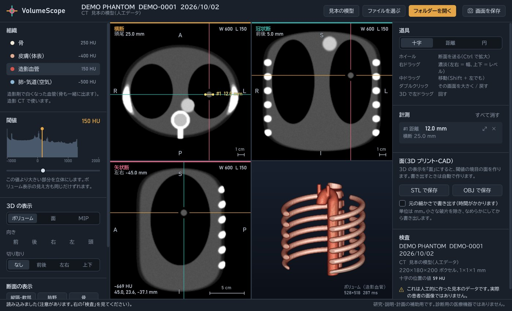
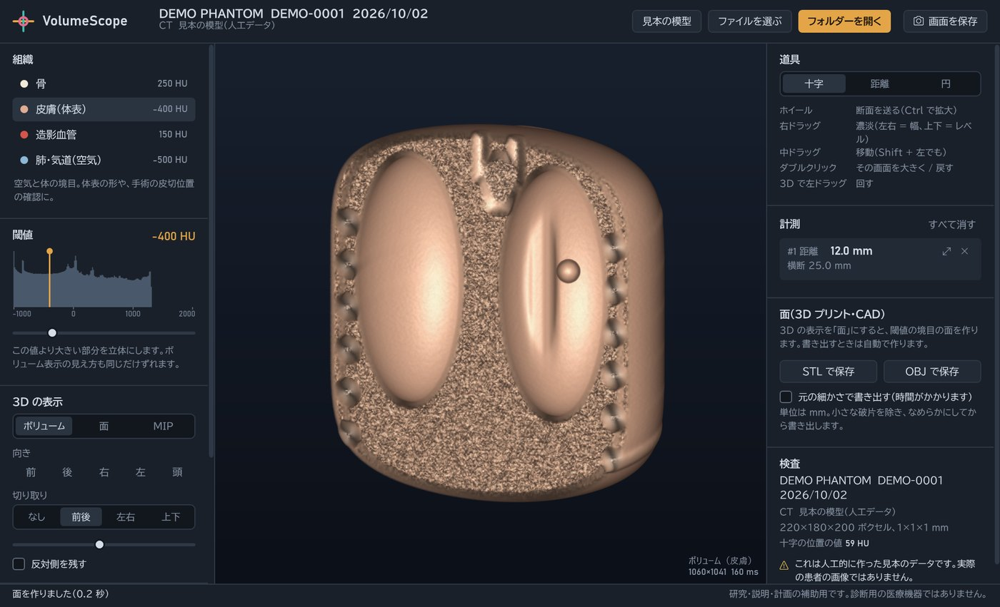
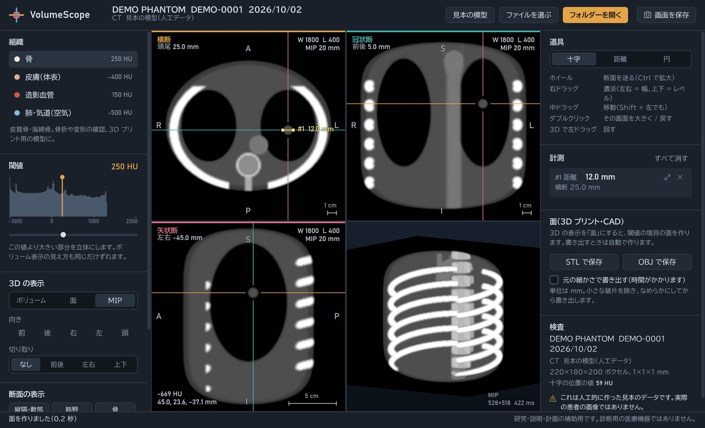

VolumeScope
CTのDICOMシリーズを読み込み、3断面(横断・冠状断・矢状断)と3Dを並べて表示するWindowsアプリ。骨・皮膚・造影血管・肺の立体表示、距離とCT値の計測、3Dプリント用のSTL書き出しまでできる、読影や手術計画の補助を想定したCT 3Dワークステーションです。



画面はすべて、アプリに入っている人工の胸部CT(見本の模型)です。実際の患者の画像ではありません。
概要
CTは数百枚の断面画像の集まりです。VolumeScopeは、それらを患者の体の中の位置に合わせて正しく積み上げて3Dにし、3方向の断面と立体を同時に見せます。十字の位置は3つの断面で連動し、3Dでは組織ごとの見え方や切り取りで体の中を確かめられます。
| プラットフォーム | Windows デスクトップ(WPF / .NET 10) |
| 開発形態 | 個人開発 |
| 主な技術 | C#, MVVM, fo-dicom(圧縮DICOMの展開を含む), マーチングキューブス法, CPUレイキャスティング, xUnit, GitHub Actions |
| ライセンス | MIT License |
構成図
データの流れに沿って、部品が順に光ります。
試してみる
ブラウザー版 haru-ki417.github.io/VolumeScope/ — フォルダー・ZIPを選ぶかドロップするだけ。3DはWebGL2のシェーダーで、Windows版と同じカメラ・伝達関数・陰影の式で描きます。断面・面・計測はWindows版と同じC#をWebAssemblyに事前翻訳(AOT)して動かしています。
- 最新のリリースから
VolumeScope-1.0.0-win-x64.zipをダウンロードして展開します(.NETのインストールは不要です)。 VolumeScope.exeを起動します。署名をしていないため警告が出た場合は「詳細情報」→「実行」を選びます。- 「見本の模型」を押すと、人工の胸部CT(背骨・肋骨・造影大動脈・肺・直径12mmの結節)で一通りの操作を試せます。
実際のCTで試す場合は、The Cancer Imaging Archive(TCIA)などの公開データが使えます。コレクションごとに利用条件が違うため、各ページで確認してください。
できること
- 読み込み: フォルダーを選ぶかドロップ。シリーズを自動で見分け、位置決め画像と重複を除外。圧縮DICOM(JPEG・JPEG 2000など)も展開
- 3断面(MPR): 患者座標で切り出し、十字の位置が3画面で連動。濃淡のプリセットと、厚みのあるMIP / 平均
- 3D: 骨・皮膚・造影血管・肺のボリュームレンダリング、閾値の面、MIP。前後・左右・上下の切り取り
- 組織と閾値: CT値の分布(ヒストグラム)を見ながら、線をドラッグして閾値を合わせる
- 計測: 2点間の距離(mm)、円の中のCT値(平均・SD・最小・最大・面積)
- 書き出し: 面をSTL / OBJ(mm単位)、画面をPNG
正しく3Dにする
- シリーズ検出位置決め・重複を除外
- 並べ替え位置を法線に投影
- 3D化番地⇔患者座標のアフィン変換
- MPR三線形補間で切り出し
- 3D表示面・ボリューム・MIP
各画像の位置(Image Position)を断面の法線方向に投影して並べるため、ファイル名や画像番号の順番に頼りません。スライスの向きと間隔も位置から求めるので、ガントリー傾斜のある撮影でもゆがまず、頭側・足側どちら向きの撮影にも対応します。符号つき12bitの画像や、Rescale Interceptを持つ形式も扱えます。
穴のない面を作る(マーチングキューブス法)
閾値の境目の面は、マーチングキューブス法で作ります。辺の上の位置を補間し、隣り合う立方体で頂点を共有して、穴のない面にしています。画像の端でも面を閉じるので、体積を求められます。計算はスライス方向に分けて並列に行い、継ぎ目の頂点をつなぎます。最後に小さな破片を除き、Taubinの方法でなめらかにします(体積がほとんど縮まない)。
GPUなしで動くボリュームレンダリング
ボリュームレンダリングはCPUのレイキャスティングで実装し、GPUのないPCや仮想環境でも動くようにしました。伝達関数で組織ごとの色と透明度を決め、勾配から陰影をつけます。不透明になった時点で計算を打ち切り、8³ボクセルの塊ごとの最大値を使って空の領域を飛ばします。操作中は粗く、止めると細かく描き直すことで、操作の軽さと画質を両立しています。
テストで確かめたこと
47件のテストで、計算の正しさを数値で確かめています。
- 読み込み: ばらばらの順番、逆向きの撮影、位置決め画像と重複、斜め+ガントリー傾斜、符号つき12bit、位置情報のない古い形式
- 面: 球の体積が理論値の1%以内、表面積が2%以内、オイラー標数が2。雑音だらけの画像でも、すべての辺がちょうど2つの三角形に共有される(穴がない)
- 描画: 空の領域を飛ばしても、飛ばさない場合と1画素も違わない。正面から見て患者の右が画面の左になる向きの慣例
- 断面・計測・STL / OBJの形式
計算部分は画面に依存しないライブラリに分け、LinuxのCIでもテストしています。
デザイン
断面ごとに色を決めています(横断は琥珀、冠状断は青緑、矢状断はばら色)。ほかの画面に引かれた十字の線も同じ色なので、どの線がどの断面かがすぐに分かります。

制限と今後
マルチフレーム(Enhanced CT)形式には未対応です(スライスごとのファイルなら読めます)。三角形が多い場合(約150万以上)は自動で粗くして表示し、書き出しでは元の細かさを選べます。計測の値は画像のPixel Spacingと位置の情報に基づくため、情報が欠けている画像では注意を表示します。
今後は、任意の向きの斜め断面、シードからの領域拡張による領域の切り出し、DICOMへの書き出しに取り組む予定です。